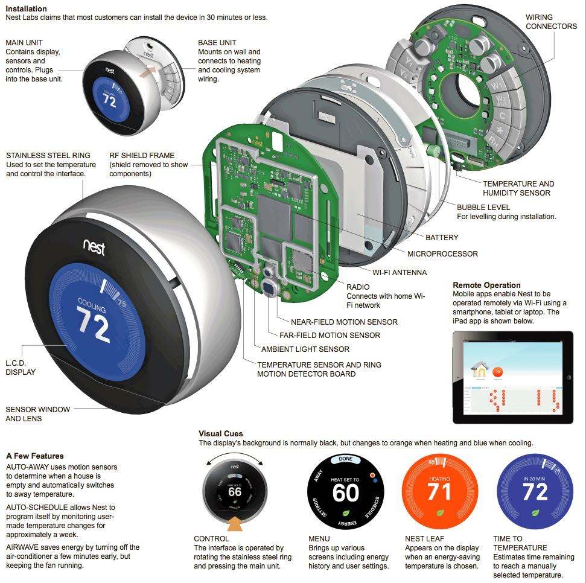

This week you’ve started to develop a database of inspirational IoT products. You’ve critically reflected on each and considered why you believe it to be an interesting ‘internet appliance’. In this exercise, we’ll go a little deeper and examine some case studies in more depth. We’ll unpack some of these examples and build intimate knowledge of their inner and outer workings.
We’ll do this by first tearing down an IoT device and developing an ‘exploded view’ of it’s parts: a drawing or photograph of a complicated mechanism that shows the individual parts (sensors, actuators, components and mecahnisms) separately, usually indicating their relative positions.
With an understanding of it’s inner workings, you’ll map out what you might need to implement an ‘open source’ alternative for the device.
The goal is to develop your understanding of the technology, mechanical and interactive construction of these devices; as well as how you develop your own IoT outcomes. This will help prepare you for the skills building and labs within the course and give you a perspective on the components and operations of these devices.
By the end of this exercise, students will:
begin to consider the technologies, functionalities and interactions that underlie connected IoT products;
have developed increased understanding of the sensors, actuators and other hardware/components used in IoT solutions;
worked within a group to develop technical understanding of one case study example.
be able to identify (related) products, not on the function, application, or market features, but on the technical components used within it.
One of the first projects to showcase the potential of the Particle platform was an ‘open source nest thermostat’.
And to prove it, we built our own approximation of the Nest Learning Thermostat in one day — and we’ve open sourced everything. In this process, we’ve come to respect the incredible technical challenges that Nest has solved while also coming to understand how much the game has changed since they first started.
Open source alternatives, at least in the hardware community, are community contributed and community built versions of a product that anyone can assemble. They provide the documentation, instructions, step-by-step guidance, a list of required parts (generally accessible from hobbyist electronics vendors), and any other design files or digital assets to reproduce their work. The best part, they also make it freely and publicly available to anyone that’s interested with no cost.
The idea of open source alternatives is one that’s really popular in the Arduino and Particle development community (like many others). You’ll find people who have made their own remote controlled garage door openers, smart sockets, their own versions of the popular Philips Hue light bulbs, and their own smart home hubs and more…
Some open source projects have even led to very profitable companies. Nomiku, an internet connected sous-vide or immersion cooker, started life as an open-source prototype before being very overfunded on Kickstarter, twice!
This is great for a few reasons:
In this exercise, we’re obviously not going to be creating an actually open sourced alternative to your product! But it’s useful to think about!
45 minutes - 1 hour (depending on time)
Paper
Pens, sharpies or markers
White board
Divide into group of approximately 4 people.
Identify an innovative IoT product you want to explore based on the examples identified by the group.
Do some detective work to deconstruct an IoT product. Assemble a diagram of the parts, hardware and technologies used. Document how this crafts functionality, interface and connectivity.
Unpack the product by ‘reverse engineering’ what components might be used based on product descriptions or other online sources. Try some of the following
Often products will give technical specs. Start by looking them up e.g. https://nest.com/thermostat/install-and-explore/
Read the product description and infer what might be happening e.g. if it shows a mobile phone, it might use Bluetooth to transfer settings or data.
Ask probing questions e.g. what does it need to know about the environment around it or the broader world to work? How does it get this information?
Don’t overlook simple components: lights, screens, or input buttons or dials are all part of the technical infrastructure of the device.
Finally Develop this into a diagram like the one below.

From: NYTimes infographic Inside the Nest Learning Thermostat
(see also: iFixIt’s Nest Thermostat Teardown)
As you build up the diagram, annotate it so that it describes some of following:
Technologies and Components: For each technology/component identified, list its purpose and role within this product.
Functionality and interface: Describe what functionality the hardware is used in and why. Note how this is presented in the interface (when, where, and how).
Data: What data or information does it gather or use?
Connectivity: Outline what other devices, online data or services this product connects to, when and why.
Interactions and Effects: When does it invite interaction? What cues/nudges toward interaction does it produce? When and why? (notifications, ambient alerts, etc.) What are the ways it is directly (with the device itself) or indirectly (remotely through the web, through a smartphone) interacted with?
Now reconstruct your IoT product with parts that are available to you. Find alternatives for parts, hardware and technologies used. Examine how you can bring these items together in desired functionality and connectivity.
Bill of materials
Start by looking at hobbyist electronics suppliers such as Sparkfun and Adafruit to get to know sensors and hardware that are commonly used. As you make decisions consider each of the choices you make for the alternative parts. Things to think about:
Develop a bill of materials (or simply a spreadsheet of the parts, their quantities, costs and links to a vendor) for your alternative. Estimate how much it would cost to make at home.
Electronics
Briefly sketch how you might bring these components together on a circuit board with your Particle. Consider:
Workflow
Finally develop a quick workflow diagram to explain how you imagine your Particle’s program for the devices primary operation/features would work. You don’t need to cover everything here, just one or two of the main interactions or operations of the device.
Each group should display their diagram and give a 2-3 minute summary of their findings.
Create a Post in the #projects channel on Slack. Include a write up/summary of your discussion and photos of your brainstorming work / process.